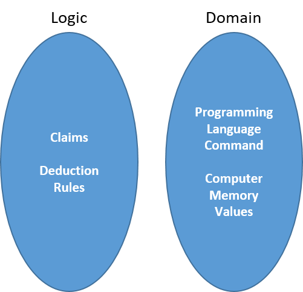
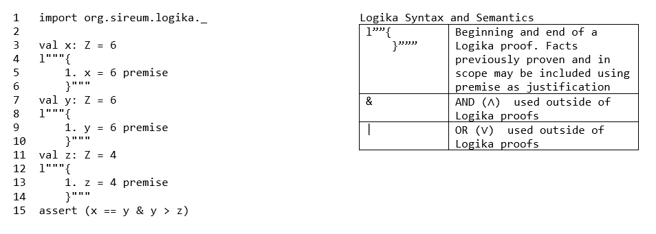
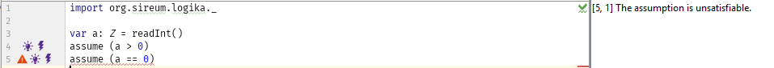
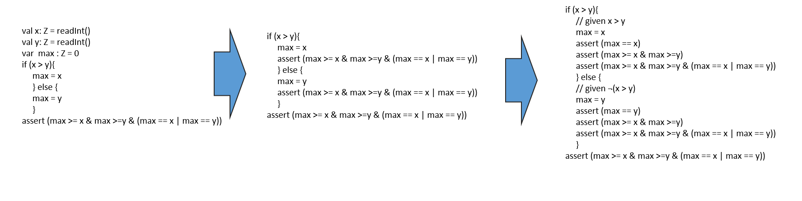

This course will now transition from developing a sound set of logical deduction rules and their use to correctly prove logical claims, to applying those skills to prove the correctness of programs. If time permits, we may cover the Curry-Howard Isomorphism, which demonstrates that there is a direct relationship between computer programs and mathematical proofs.
A logic for programming languages would allow us to reason about out program in a systematic way, it might eliminate the need for programming debugging and in many cases may allow for automatic verification that a program is correct.
Earlier in the course, we discussed what we meant by a logic. A logic is a set of truth preserving rules for a domain, which allow new claims (truths) to be derived from the known truths (premises). We further said a logic is sound if new claims in the logic are also true in the domain. The model (the logic abstraction) must match reality. Finally, we limited ourselves to logics that can be executed by a machine.
Here, the domain is that of programming commands and how they impact our knowledge about values stored in memory. This abstraction models every thing about what a program does as set of values in memory and how each command changes what we know about those memory values. It allows us to ignore details such as where the value is (in cache, main memory or virtual memory) and commands which don’t impact the memory values.
We would like our logic to be able to follow the structure of a program and express truths about the values of variables in the program. To that end, our logic will state claims about variables after each command which impacts the knowledge about them.
program command 1
l"""{ previous claims and
claims based on program command 1}"""
program command 2
l"""{ previous claims and
claims based on program command 2}"""
program command 3
l"""{ previous claims and
claims based on program command 3}"""
We will come up with two kinds of logical rules for the programming domain. The first will be claim-manipulating rules. These rules will allow simplification of existing facts through substation and algebra and are used as justifications in Logika proofs.
Claim-transforming rules, on the other hand, capture the meaning of a programming command and allow the deduction of new claims which hold after command execution. They are not used justifications in a Logika proof, but rather provide information on what extra is generated by the programming command.
Let us begin by considering programs with assignments without mutation. A program with this feature is called a single-assignment program.
Consider the code
1 2 3 4 5 6 7 | import org.sireum.logika._
val x: Z = 6
val y: Z = 6
val z: Z = 4
assert (x == y & y > z)
|
If we were to paste this into Sireum-Logika right now, it would not pass. The error would be akin to the assertion at line 7 has not been proven. To prove this we note that every assignment statement creates a new fact, but we need to update the Logika-checker with the new fact using special syntax.
In general, every time there is an assignment, there will be a following Logika
proof block updating all relevant facts. However this still will not run.
Although we have updated the “fact” of each assignment we have not connected
them in any meaningful manner. Lets start with adding a new justification for
substitution (subst).
Given 3 integers a, b, c and the fact a == b ∧ b == c, we would like to be
able to express a == c as a valid claim. This is the process of substitution.
Substitution preserves truth by replacing one proposition with an equivalent one.
In Logika it has two forms:
Syntax: subst1 source target // ( 1 == LHS, 2 == RHS )
Semeantics: Replace every occurrence of the LHS(RHS) of the source in the target
with the RHS(LHS) of source
Using the substitution rule, the proof now looks like:
1 2 3 4 5 6 7 8 9 10 11 12 13 14 15 16 17 18 19 20 21 22 | import org.sireum.logika._
val x: Z = 6
l"""{
1. x = 6 premise // generated by line 3's assigment
}"""
val y: Z = 6
l"""{
1. y = 6 premise // generated by line 7's assigment
2. x = 6 premise // from the proof on line 4 - 6
3. x = y subst2 1 2
}"""
val z: Z = 4
l"""{
1. z = 4 premise // generated by line 7's assigment
2. x = y premise // from the proof on line 9 - 13
3. y = 6 premise // from the proof on line 9 - 13
}"""
assert (x == y & y > z)
|
Here the use of substitution on line 12 solves the left hand side of the assertion. However to handle the mathematical relationship of 4 < 6 we will need a different tool.
If given integers a, b, c and a < b ∧ b < c we would like to simplify to
a < c. Substitution will not work, as it deals strictly with equalities.
Fortunately, there is a powerful deduction rule in Logika called algebra.
Algebra knows the equality and inequality relationships between integers. The
claim 21. 6 > 4 algebra is perfectly correct in the programing logic
proof environment. Algebra correctly evaluates integer addition, subtraction,
multiplication, division and modulo.
Algebra uses properties like distributive laws, commutative laws etc.
For example, here are some laws for the binary operators, + and * where
the operands (arguments) are integers:
(a + b) + c = a + (b + c) law associativity of +
a + b = b + a law commutativity of +
a + 0 = a law unit+
(a * b) * c = a * (b * c) law associativity*
a * b = b * a law commutativity*
a * 1 = a law unit*
a * (b + c) = (a * b) + (a * c) law distributive * over +
Lets take a look at the complete proof:
1 2 3 4 5 6 7 8 9 10 11 12 13 14 15 16 17 18 19 20 21 22 23 24 | import org.sireum.logika._
val x: Z = 6
l"""{
1. x = 6 premise
}"""
val y: Z = 6
l"""{
1. y = 6 premise
2. x = 6 premise
3. x = y subst2 1 2
}"""
val z: Z = 4
l"""{
1. z = 4 premise
2. x = y premise
3. y = 6 premise
4. y > z algebra 1 3
5. x = y ∧ y > z ∧i 2 4
}"""
assert (x == y & y > z)
|
Here on line 20 we see the most common use of algebra. Logika is told to use
other facts it can find in claim 1 (line 17) and claim 3 (line 19) along with
algebra to deduce y > z. In general you will feed algebra the lines that
allow Logika to calculate the value (or value range) of each var or val
in the claim.
All the claims you pass to algebra must be in the current proof. Passing too
many, or irrelevant claims generally does no harm. For example,
y > z algebra 1 2 3 would still work but the fact that x = y is not helpful.
If your claims are insufficient (y > z algebra 1 2), you will receive an
error.
Astute readers may have noticed that algebra can often be use in place of
substitution. In fact, line 12 can be written as
3. x = y algebra 1 2. Algebra has rules for integer (in)equalities and
“common” mathematical operations. It will also handle ¬, as in ¬ (x == 0)
which evaluates as `` x != 0``. However, algebra cannot handle any claim
involving ∧, ∨, →, ⊥, ∀, ∃. For these you will have to use substitution to
build compound/complex claims.
Next, we use ∧i to create a claim which exactly matches the boolean assertion in
line 24. Exactly means exactly. If you need assert( x == 6) and you have a
claim of 6 = x; it will not work. Likewise, assert ( p | q) will not
match q ∨ p.
Here is another quick example.
1 2 3 4 5 6 7 8 9 10 | val hours: Z = 4
l"""{ 1. hours == 4 premise // (generated by the assignment)
}"""
val minutes: Z = hours * 60
l"""{
1. hours == 4 premise // (the last-stated fact, unaltered)
2. minutes == hours * 60 premise // (the fact generated by the assignment)
3. minutes == 240 algebra 1 2
}"""
assert(minutes = 240)
|
There are three things to note about division (or modulo) when using variables and
integer types. First Logika can be finicky about division by a var.
Second, Logika requires you to prove the denominator is not zero before
the division. You must prove exactly denominator != 0. Other forms,
denominator > 0 or 0 != denominator will not work. This leads to silly
looking but necessary statements like
...
14 . 2 != 0 algebra
}"""
var c: Z = a / 2
Finally, Logika KNOWS integer division. 165. (a/5) * 5 = a algebra is not
true. You are doing integer math and need to account for the remainder.
1 2 3 4 5 6 7 8 | import org.sireum.logika._
val a: Z = readInt()
l"""{
2. 3 != 0 algebra
}"""
assert (a == (a % 3) * 3)
|
In the above examples, the program correctly fails to verify.
Often in logic and programming, we need helper functions, previously proved sub-proofs, lemmas etc. to make the work easier. In this course, the Logika commands assume and assert fit in this niche. You have already seen assert in use, so now is an opportune time to more formally introduce the claim-transformation rules for both.
An assume statement, assume (expression), consists of the keyword assume and
an expression. If the expression is satisfiable, then the expression is entered
as a premise in the following Logika proof-block.
var a: Z = readInt()
assume (a > 0 )
l"""{
1. a > 0 premise
}"""
You will see a Logika error if the assumption is not satisfiable.
Toy programs often use assume in lieu of wrapping code in an “if statement”
var a : Z = readInt()
assume (a != 0)
l"""{
1. a != 0 premise
}"""
var b = 20 / a
// instead of
var a : Z = readInt()
var b : Z = 0
if (a != 0) {
b = 20 / a
}
The assert statement, assert(expression), consists of the keyword assert and
an expression. If the expression is true, then the expression is entered
as a premise in the following Logika proof-block. If the expression is
not true Logika throws an error.
This expression is often used to “prove” that a block of code had the intended effect. It is helpful when “backwards reasoning” (see below) through a program.
...
l"""{
... // prove exp
100. exp justification
}"""
assert(exp)
l"""{
1. exp premise
}"""
With these utility functions in hand, we can get back to our development of claim-transforming rules for assignment.
What we have discussed so far works great for values (named memory locations which are immutable), but does not address the much more common computer programming practice of using mutable locations (or variables). Logika supports variables, and the following program is valid.
1 2 3 4 5 6 7 8 9 10 11 12 13 14 | import org.sireum.logika._
var x: Z = readInt(" Enter an integer greater than 0 :")
assume (x > 0)
l"""{
1. x > 0 premise
}"""
x = 2
l"""{
1. x = 2 premise
2. x > 1 algebra 1
}"""
assert (x > 1)
|
But this approach quickly breaks down when you consider:
1 2 3 4 5 6 7 8 9 10 11 12 13 14 | import org.sireum.logika._
var x: Z = readInt(" Enter an integer greater than 0 :")
assume (x > 0)
l"""{
1. x > 0 premise
}"""
x = x + 1
l"""{
1. x = x + 1 premise????
2. ????
}"""
assert (x > 1)
|
While x = x + 1 makes perfect sense in programming languages, it is utter
rubbish in logic. Instead we need different rules and more precise
way of reasoning about assignment.
In the assignment, x = x + 1, we must distinguish between the “old” value of
x, which appears on the assignment’s right-hand side, and its “new” value,
which appears on its left-hand side.
With this distinction, we can reason correctly about x.
Here is the example repeated, with the distinction made clear:
1 2 3 4 5 6 7 8 9 10 11 12 13 14 15 16 | import org.sireum.logika._
var x: Z = readInt(" Enter an integer greater than 0 :")
assume (x > 0)
l"""{
1. x > 0 premise
}"""
x = x + 1
l"""{
0. x_old > 0 premise
1. x = x_old +1 premise
2. x_old = x -1 algebra 1
3. x - 1 > 0 algebra 2 0
4. x > 1 algebra 3
}"""
assert (x > 1)
|
When we have an assertion, P(x), that holds true just before an assignment,
x = f(x), we calculate the assertions after the assignment, in two stages:
x = [x_old/x]f(x) and also [x_old/x]P(x).
The notation, [x_old/x]E, means that we substitute (replace) all
occurrences of x within expression f(x) by x_old.Q(x), that does not
mention x_old.
This assertion can be carried forwards as a premise for future deduction.This is what we did in the earlier example – we deduced x > 1, which we can
carry forwards.
We then forget all the assertions that mentioned x_old.
NOTE: It is vitally important you update all facts which depend on x_old before you exit the Logika proof block following the assignment which caused it to exists. The scope of x_old is only that first Logika proof after the assignment.
The rule’s schematic looks likes this:
l"""{
...
m. P
}"""
x = e
l"""{
1. x == [x_old/x]e premise
2. [x_old/x]P premise
...
n. Q // (where Q must _not_ mention x_old)
}"""
Here is a second example that shows the form of reasoning we follow when working
with assignments.
Say that y > x at the outset, and we wish to preserve this property as the
computation progresses.
We can prove it with algebra:
1 2 3 4 5 6 7 8 9 10 11 12 13 14 15 16 17 18 19 20 21 22 23 24 | import org.sireum.logika._
var x: Z = readInt("Enter an int")
var y: Z = readInt("Enter LARGER int")
assume (y > x)
l"""{ 1. y > x premise }"""
x = x - 1
l"""{
1. y > x_old premise
2. x == x_old - 1 premise
3. x_old == x + 1 algebra 2 // This line abbreviates multiple small steps.
4. y > x + 1 subst1 3 1 // Substitute the equality on line 3 into the formula on line 1.
5. y > x algebra 4 // There is no mention of x_old
}"""
y = y + 1
l"""{
1. y_old > x premise
2. y == y_old + 1 premise
3. y > x algebra 1 2 // This line abbreviates these steps:
// y_old == y - 1
// y - 1 > x
// y > x + 1
}"""
assert (y > x)
|
After each command, a proof segment begins with the premises and then subst and algebra steps lead to the last line, which states the knowledge that travels forwards to the next command. Again, we must ensure that no “_old” variables appear in any claims which we may want to use in subsequent Logika proof blocks as claims.
Here is a third example, where we wish to show that the value within variable
x falls in a certain range (perhaps x is used as an index to an array):
1 2 3 4 5 6 7 8 9 10 11 12 13 14 15 16 17 18 19 | import org.sireum.logika._
var x: Z = readInt()
// the precondition is that int x falls in the range, 1,2,...,99
assume (x > 0 & x < 100)
l"""{ 1. x > 0 ∧ x < 100 premise }"""
x = x + 1
l"""{
1. x_old > 0 ^ x_old < 100 premise
2. x_old > 0 ^e1 1
3. x == x_old + 1 premise
4. x_old + 1 > 1 algebra 2
5. x > 1 subst2 3 4
6. x_old < 100 ^e2 1
7. x_old + 1 < 101 algebra 6
8. x < 101 subst2 3 7
9. x > 1 ^ x < 101 ^i 5 8
}"""
assert ( x > 1 & x < 101)
|
The starting assertion about x is sometimes called a precondition, because
it is the input property that the program requires to operate successfully.
The goal of the program is its postcondition. More on this when we discuss
functions and procedures (similar to C# Methods).
Sometimes we really must discuss the “old” value of a variable after an
assignment completes.
Here is a small but tricky program that swaps the values of the its two
variables, x and y:
var x: Z = readInt()
var y: Z = readInt()
val temp: Z = x
x = y
y = temp
println (x, y)
At the end of the program, we want to assert that y has x’s value and
x has y’s.
To do this, we may invent dummy constants called xin and yin and
pretend they are the input values to x and y respectively:
1 2 3 4 5 6 7 8 9 10 11 12 13 14 15 16 17 18 19 20 21 22 23 24 25 26 27 28 29 30 31 32 33 | import org.sireum.logika._
val xin: Z = readInt()
val yin: Z = readInt()
var x: Z = xin
var y: Z = yin
l"""{
1. x == xin premise
2. y == yin premise
}"""
val temp: Z = x
l"""{
1. temp == x premise
3. x == xin premise
4. temp == xin subst1 3 1
}"""
x = y
l"""{
1. x == y premise
3. temp == xin premise
5. y == yin premise
6. x == yin subst1 5 1
}"""
y = temp
l"""{
1. y = temp premise
2. temp = xin premise
3. y = xin algebra 1 2
5. x = yin premise
4. y = xin ^ x = yin ∧i 3 5
}"""
assert(y == xin & x == yin)
|
The dummy values xin and yin plus the assignment law navigate us
through the deduction.
After several examples, we are tempted to conclude that deducing forwards knowledge is a mechanical activity, where we do an assignment and then eliminate occurrences of the “old” variable, like this:
l"""{ P }"""
x = e
l"""{
1. [x_old/x]P premise
2. x == [x_old/x]e premise
// solve for x_old in terms of x and e :
3. x_old = ...x... algebra 2
// eliminate x_old in Line 1 :
4. [...x.../x_old]P subst1 3 1
}"""
We can apply this pattern to an earlier example – it works!
1 2 3 4 5 6 7 8 9 10 11 12 13 14 15 16 17 18 | import org.sireum.logika._
var x: Z = readInt()
assume (x > 0 & x < 100)
x = x + 1
l"""{
1. x_old > 0 ^ x_old < 100 premise
2. x == x_old + 1 premise
// Solve for x_old :
3. x_old == x - 1 algebra 2
// Restate inequalities as atoms
4. x_old > 0 ∧e1 1
5. x_old < 100 ∧e2 1
// Eliminate x_old
6. x > 1 algebra 4 3
7. x < 101 algebra 5 3
8. x > 1 ∧ x < 101 ∧i 6 7
}"""
assert (x > 1 & x < 101)
|
Will the variable-elimination technique always lead us to the final goal? If so, perhaps we can write a proof generator that will automatically write the proofs for us!
Unfortunately, the answer here is “no”. The reason is that important intermediate knowledge can be lost, and here is a simple example that shows how:
var x: Z = readInt()
val y: Z = x * 2
l"""{
1. y == x * 2 premise
}"""
x = 3
l"""{
1. y == x_old * 2 premise
2. x == 3 premise
3. x_old == y / 2 algebra 1 // Solve for x_old
// We cannot eliminate x_old from Line 2 ?!
// The knowledge that travels forwards is only
// x == 3
// We lose knowledge about y.
}"""
val z: Z = 4
// prove here that y % 2 == 0, that is, y is an even-valued int
l"""{
1. x == 3 premise
2. z == 4 premise
// We cannot use x_old == y / 2 as a premise .... x_old has disappeared.
// Lines 1 and 2 cannot prove the goal.
}"""
A human sees how to repair the above proof – extract new knowledge about y
from premise y == x_old * 2:
1 2 3 4 5 6 7 8 9 10 11 12 13 14 15 16 17 18 19 20 | import org.sireum.logika._
var x: Z = readInt()
val y: Z = x * 2
l"""{
1. y == x * 2 premise
}"""
x = 3
l"""{
1. y == x_old * 2 premise
2. y % 2 == 0 algebra 1 // because y is even-valued, even though
// we don't know what value it has
}"""
val z: Z = 4
// prove here that y % 2 == 0, that is, y is an even-valued int
l"""{
1. y % 2 == 0 premise //
2. 2 != 0 algebra // this line is necessary to avoid an error
// saying we haven't proven divisor is non-zero
}"""
assert (y % 2 == 0)
|
When we analyze a program in a forwards direction, we work together with an automated checker tool to reach our goal.
The previous examples raise this question: When we analyze a program from start to finish, which facts should we try to deduce and carry forwards after each assignment? We cannot answer this question unless we know the goal assertion we are trying to prove at the program’s end. For this reason, we should learn how to reason backwards from the goal at the end of a program to the asserts at the beginning. This is called goal-directed reasoning, and there is a simple, beautiful deduction rule for assignments that takes the guesswork out of goal-directed reasoning.
Here is an example.
Say that at program’s end, x > 2 must hold, and the program ends like this:
. . .
l"""{
subgoal: ???
}"""
x = y + 1
l"""{
goal: x > 2
}"""
What is the subgoal needed for success?
It appears that y > 1 must hold just before the assignment.
How did we calculate this?
Since the assignment “equates” x with y + 1, it must be y + 1 that
is greater than 2 – we substitute y + 1 into the goal, for x,
that is, we compute the subgoal as:
[y + 1 / x] (x > 2) = (y + 1) > 2
that is, y > 1 is the subgoal:
. . .
l"""{
subgoal: y > 1
}"""
x = y + 1
l"""{
goal: x > 2
}"""
This reasoning is the basis of a “backwards law” for assignment commands.
The formal statement of the backwards-assignment law is this:
l"""{
subgoal: [e/x]G
}"""
x = e
l"""{
goal: G
}"""
The goal, G, is sometimes called the assignment’s postcondition, and
the subgoal, [e/x]G, is the precondition.
It is a formal, proved result that every such precondition, postcondition pair
calculated by the backwards-assignment law can be proved as a correct forwards
deduction with the forwards-assignment law.
Let’s use the backwards assignment law on an example from the previous section.
var x: Z = readInt()
assume (x > 0 & x < 100)
l"""{
???
}"""
x = x + 1
l"""{
x > 1 ^ x < 101 (goal)
}"""
println(x)
The backwards assignment law tells us ???` should be
[x + 1/ x](x > 1 ^ x < 101):
var x: Z = readInt()
assume (x > 0 & x < 100)
l"""{
x + 1 > 1 and x + 1 < 101 (subgoal)
}"""
x = x + 1
l"""{
x > 1 ^ x < 101 (goal)
}"""
println(x)
Now, we use algebra to show that the assert proves the subgoal:
var x: Z = readInt()
assume (x > 0 & x < 100)
l"""{
1. x > 0 ^ x < 100 premise
2. x > 0 ^e1 1
3. x < 100 ^e2 1
4. x + 1 > 1 algebra 2
5. x + 1 < 101 algebra 3
6. x + 1 > 1 and x + 1 < 101 ^i 4 5 // (subgoal achieved)
}"""
x = x + 1
l"""{
1. x_old + 1 > 1 and x_old + 1 < 101 premise
2. x == x_old + 1 premise
3. x > 1 ^ x < 101 subst2 2 1 // (goal achived)
}"""
println(x)
The backwards law helps us calculate exactly the correct knowledge at intermediate program points that will lead to the desired final goal.
This technique works well on programs that are sequences of assignments. Here are two examples worked in backwards style:
var dimes: Z = readInt()
var money: Z = dimes * 10
assume WHAT??
dimes = dimes + 1
money = money + 10
// GOAL: money == dimes * 10
We fill in the subgoals one by one:
var dimes: Z = readInt()
var money: Z = dimes * 10
assume WHAT??
l"""{ SUBGOAL II: (money + 10) == (dimes + 1) * 10 }"""
dimes = dimes + 1
l"""{ SUBGOAL I: (money + 10) == dimes * 10 }"""
money = money + 10
// GOAL: money == dimes * 10
Some algebra simplifies the second subgoal into just money == dimes * 10,
which must be asserted at the beginning.
Here is a previous problematic example, now neatly handled:
y = x * 2
l"""{
SUBGOAL II: y % 2 == 0 (x doesn't matter!)
}"""
x = 3
l"""{
SUBGOAL I: y % 2 == 0 (z doesn't matter!)
}"""
z = 4
// GOAL: y % 2 == 0, that is, y is an even-valued int
The backwards technique works even when there is a self-referential assignment:
var x: Z = readInt()
assume (x > 1)
x = x + 1
l"""{
goal: x > 2
}"""
We calculate that the subgoal before the assignment must be
[x + 1 / x](x > 2), which is (x + 1) > 2.
A small algebra step completes the forwards proof of the backwards deduction:
var x: Z = readInt()
assume (x > 1)
l"""{
1. x > 1 premise
2. x + 1 > 2 algebra 1
}"""
x = x + 1
l"""{
1. x = x_old + 1 premise
2. x_old + 1 > 2 premise
3. x > 2 subst2 1 2
}"""
By reasoning backwards, we avoid the need to work directly with x_old –
the subgoals we calculate by substitution are correctly expressed in terms of
x.
So, if your program has a clearly stated goal, you can use backwards reasoning
to prove that the goal is achieved.
To deduce the knowledge generated by a conditional (if-else) command, we must
analyze both arms (paths) within the command.
This is because some executions will follow the then-arm and some will follow
the else-arm.
Before we state the rules for forwards and backwards reasoning, we motivate the
key ideas with examples.
This conditional command sets max to the larger of numbers x and y:
if (x > y) {
max = x
} else {
max = y
}
What can we assert when the command finishes, no matter what the values of x
and y might be?
First, when we analyze the then-arm, we have:
max = x
l"""{
1. max == x premise
}"""
and when we analyze the else-arm, we have:
max = y
l"""{
1. max == y
}"""
These two deductions imply that, when the conditional finishes, one or the other property holds true:
if (x > y) {
max = x
} else {
max = y
}
l"""{
1 . max == x v max == y premise
}"""
This illustrates the first principle of conditional commands: the knowledge produced by the command is the disjunction (or) of the knowledge produced by each arm. In the section on propositional logic, we covered how to apply cases analyses on disjunctive assertions to extract useful knowledge.
Recall that the intent of the conditional was to set max so that it holds
the larger of x and y.
The assertion we proved so far does not imply the desired goal.
This is because we ignored a critical feature of a conditional command:
By asking a question — the test — the conditional command generates new
knowledge.
For the then arm, we have the new knowledge that x > y;
for the else-arm, we have that ~(x > y), that is, y >= x.
We can embed these assertions into the analysis of the conditional command,
like this, and conclude that, in both cases, max holds the maximum of x
and y:
1 2 3 4 5 6 7 8 9 10 11 12 13 14 15 16 17 18 19 20 21 22 23 24 25 26 27 28 29 30 31 32 33 34 35 36 | import org.sireum.logika._
val x: Z = readInt()
val y: Z = readInt()
var max: Z = readInt()
if (x > y) {
l"""{
1. x > y premise
}"""
max = x
l"""{
1. x > y premise
2. max == x premise
3. max >= x algebra 2
4. max >= y algebra 1 3
5. max >= x ∧ max >= y ^i 3 4
}"""
} else {
l"""{
1. ¬ (x > y) premise
2. y >= x algebra 1
}"""
max = y
l"""{
1. max == y premise
2. y >= x premise
3. max >= y algebra 1
4. max >= x algebra 1 2
5. max >= x ∧ max >= y ^i 4 3
}"""
}
l"""{
//1. (max >= x ∧ max >= y) ∨ (max >= x ∧ max >= y) Logika will not take this
1. max >= x ∧ max >= y premise
}"""
assert (max >= x & max >= y)
|
Each arm generates the assertion that max >= x ^ max >= y.
Now, in both cases of the or-formula, we can conclude merely
max >= x ^ max >= y, as listed in the proof’s last line. This is very
similar to OR-elimination from propositional logic.
More accurately stated, the if-else’s proof is
<proved in if-branch> v <proved in else-branch>, but Logika’s implementation
of the conditional’s claim transformation will not accept the
disjunction’s form when the LHS and RHS are exactly the same. Instead this is
exactly the as max >= x ^ max >= y.
We are not yet finished with this example; the desired goal is truly:
max >= x ^ max >= y ^ (max == x v max == y)
You should build a proof of this goal assertion by combining the two partial proofs that we have already constructed.
Here is the schematic of the forwards law for conditionals:
l"""{
...
P
}"""
if (B) {
l"""{
1. B premise
2. P premise
...
}"""
C1
l"""{
...
Q1
}"""
} else {
l"""{
1. ¬ B premise
2. P premise
...
}"""
C2
l"""{
...
Q2
}"""
}
l"""{
1. Q1 ∨ Q2 premise
}"""
Note
if(B){ Q1 } else { Q1 }1. P ∨ P premise if the if-Logika-proof block.Instead use 1. P premise.
That is, given the assertion, P, at the conditional’s start, the then-arm,
C1 uses P and B to generate assertion, Q1, and the else-arm,
C2, uses P and ¬B to generate assertion Q2.
These two conclusions are joined at the conditional’s conclusion.
When a conditional command lacks an else-arm, e.g.:
if (x < 0 ) {
x = 0 - x
}
we analyze it without one, using the negation of the if-condition as the only “fact” from the omitted else-branch
1 2 3 4 5 6 7 8 9 10 11 12 13 14 15 16 17 18 19 20 21 22 23 24 25 26 27 28 29 | import org.sireum.logika._
var x: Z = readInt()
if (x < 0) {
l"""{
1. x < 0 premise
}"""
x = 0 - x
l"""{
1. x_old < 0 premise
2. x = 0 - x_old premise
3. x >= 0 algebra 1 2
}"""
}
l"""{
1. x >= 0 ∨ ¬ (x < 0) premise
2. {
3. x >= 0 assume
}
4. {
5. ¬ (x < 0) assume
6. x >= 0 algebra 5
}
7. x >= 0 ∨e 1 2 4
}"""
assert( x >= 0 )
|
Here, note on line 18 the negation of the if-condition is used in place of an “else” branch.
Assertions that are disjunctions are cumbersome to handle, and we should avoid
them when possible.
Given that the forwards law for conditionals generates a disjunction, reflecting
the two possibilities for execution, it is important to learn how to reason
backwards from a goal through the arms of a conditional command.
As usual, we motivate the law through an example.
Using the previously seen program that assigns to max, perhaps we want to
prove the goal, max >= x ^ max >= y ^ ( max == y V max == x).
Our intuition tells us that this goal must be achieved through both
paths of the conditional command.
1 2 3 4 5 6 7 8 9 10 11 | import org.sireum.logika._
val x: Z = readInt()
val y: Z = readInt()
var max : Z = 0
if (x > y){
max = x
} else {
max = y
}
assert (max >= x & max >=y & (max == x | max == y))
|
This can be accomplished this way
First we observe that there are no disjunctions at the top level of the goal
so the entire assertion must be proven in both the if- and else-branch. Next
we observe that each branch can prove one-side of the max == y V max == x
proposition and finally we note which branch uses the if-condition and which the
if-condition’s negation.
Another way to look at this same program is might be to say if x > y then max equals x otherwise max equals y. In other words as an implication.
1 2 3 4 5 6 7 8 9 10 11 | import org.sireum.logika._
val x: Z = readInt()
val y: Z = readInt()
var max : Z = 0
if (x > y){
max = x
} else {
max = y
}
assert ((x > y) → (max == x )) ∨ ( ¬ (x > y) → (max == y))
|
To which we would then “allocate” one side of the top level disjunction to the if-branch and the other to the else-.
1 2 3 4 5 6 7 8 9 10 11 12 13 14 15 | import org.sireum.logika._
val x: Z = readInt()
val y: Z = readInt()
var max : Z = 0
if (x > y){
max = x
assert(max == x)
assert((x >y) → (max == x))
} else {
max = y
assert(max == y)
assert(¬ (x > y) → (max == y))
}
assert ((x > y) → (max == x )) ∨ ( ¬ (x > y) → (max == y))
|
Unfortunately, Logika programs do not understand ¬ , → so it must be written
in the disjunctive form of implication
1 2 3 4 5 6 7 8 9 10 11 12 13 14 15 | import org.sireum.logika._
val x: Z = readInt()
val y: Z = readInt()
var max : Z = 0
if (x > y){
max = x
assert(max == x)
assert(!(x > y) | (max == x))
} else {
max = y
assert(max == y)
assert((x > y) | (max == y))
}
assert ((!(x > y) | (max == x)) | ((x > y) | (max == y)))
|
Lets assume you wanted a program to calculate absolute values. Here is an example where incorrect coding will keep you from achieving the desired proof:
var x: Z = readInt()
if (x > 0) {
x = 0 - x
}
assert( x >= 0)
Using backwards reasoning, we quickly deduce that
var x: Z = readInt()
if(x > 0){
x = 0 - x
l"""{
1. x_old > 0 premise
2. x = 0 - x_old
....
100. x >= 0 ????
}
}
l"""{
1 . x >= 0 ∨ !(x > 0)
...
100. x >= 0 ∨e 1 a b
}"""
assert( x >= 0 )
We see immediately there is no way that the if-subgoal holds true: clearly,
(x > 0 → -x > 0) is false, and ¬ (x > 0) → x >= 0 is false also
(for values of x that are negative).
So, we cannot prove that the program achieves its goal.
Forwards reasoning also fails:
var x: Z = readInt()
if (x > 0) {
l"""{ x > 0 }"""
x = 0-x
l"""{
1. x = 0 - x_old premise
2. x_old > 0 premise
3. x < 0 algebra 1 2
}"""
}
l"""{
1. x < 0 ∨ !(x > 0)
There is no way we can deduce x >= 0
}"""
assert(x >= 0 )
In contrast, say that we consider this variation of the example:
var x: Z = 0
if(x > 0){
x = 0 - x
}
assert(x >=0)
We can prove, using either forwards or backwards reasoning, that this particular program achieves its goal (because we can deduce that the if-branch will be skipped).
Here are the two laws for reasoning about assignments:
First, recall that the notation, [a/b]E, denotes phrase E with all
occurrences of b replaced by a.
(Example: [3 / x](2 * x * x) is (2 * 3 * 3).)
Here is the deduction law for an assignment command:
l"""{
...
m. P
}"""
x = e
l"""{
1. x == [x_old/x]e premise
2. [x_old/x]P premise
...
n. Q (where Q must _not_ mention x_old)
}"""
Given a goal, G, we compute this subgoal:
l"""{ [e/x]G }"""
x = e
l"""{ G }"""
That is, the subgoal (precondition) required to achieve (postcondition) G
with the assignment is [e/x]G.
l"""{ ... P }"""
if (B) {
l"""{
1. B premise
2. P premise
...
}"""
C1
l"""{ ... Q1 }"""
} else {
l"""{
1. ¬B premise
2. P premise
...
}"""
C2
l"""{ ... Q2 }"""
}
l"""{ 1. Q1 v Q2 premise }"""
assert ( Q1 | Q2)
That is, if we deduce from precondition B ^ P and commands C1 a
postcondition Q1 (and do the same for C2, we can assemble the
postcondition Q1 v Q2 for the conditional.
(Of course, if Q1 is identical to Q2, we can conclude just Q1.)
l"""{ (B --> S1) ^ (¬B --> S2) }"""
if (B) {
l"""{ S1 }"""
C1
l"""{ G }"""
} else {
l"""{ S2 }"""
C2
l"""{ G }"""
}
l"""{ G }"""
assert( G )
That is, if we deduce that S1 is the subgoal required by C1 to attain
goal G (similarly for C2), then the subgoal (precondition) needed to
attain the goal (postcondition) by the conditional is
(B --> S1) ^ (¬B --> S2).
This note was adapted from David Schmidt's CIS 301, 2008, Chapter 2 course note.
It was updated in 2018 by Dr John Hatcliff and George Lavezzi
to conform with Logika syntax and more closely match
KSU's CIS 301 course as taught in Spring 2018.
{kind=link}
{kind=link}
{kind=link}
{kind=link}